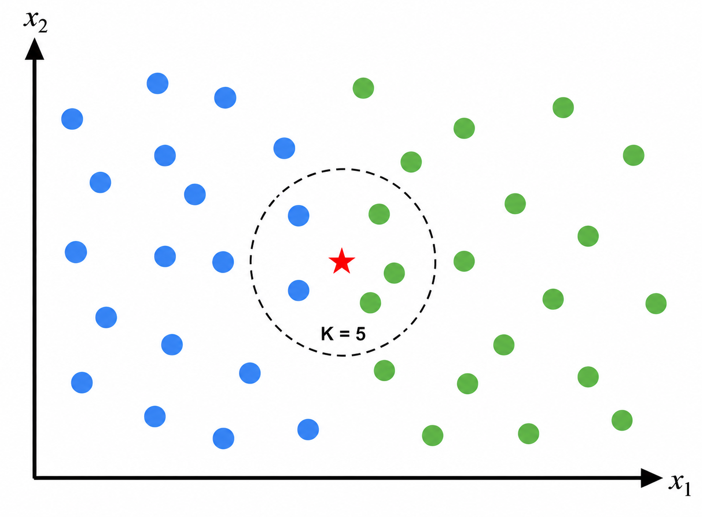
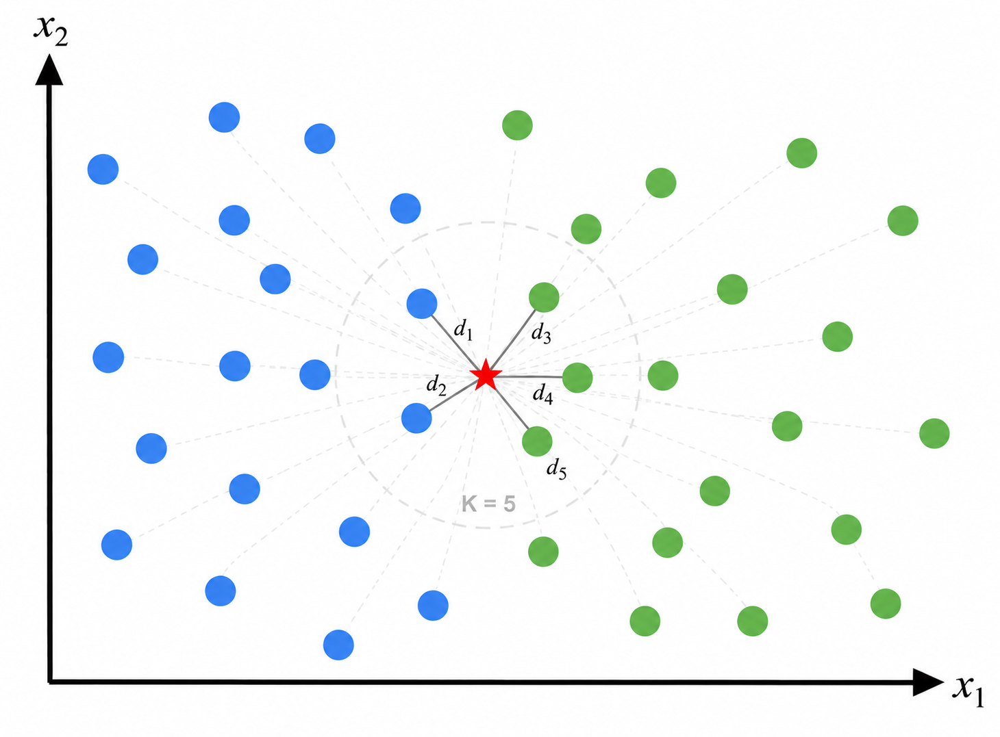
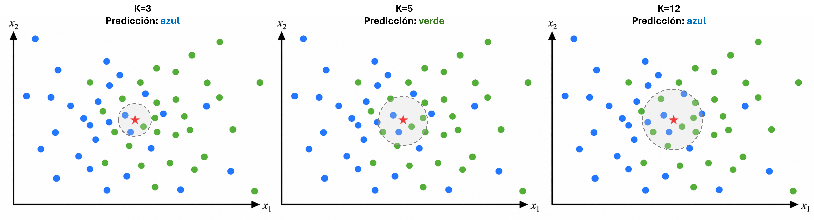
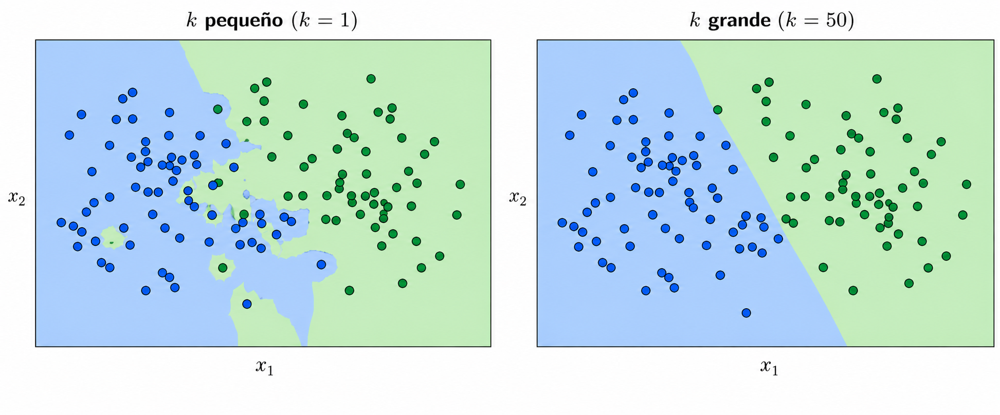
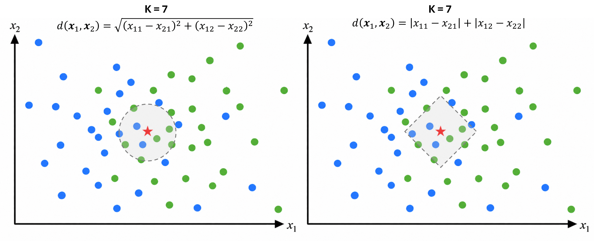

Aprendizaje supervisado
K-Nearest Neighbors (KNN)
Introducción
Supongamos que tenemos un problema de clasificación y queremos predecir la clase de una nueva observación.
Idea: buscar las observaciones más parecidas dentro de los datos conocidos.
Si la mayoría de los vecinos pertenece a cierta clase, predecimos la nueva observación como miembro de esta clase

K-Nearest Neighbors (KNN) predice utilizando las \(k\) observaciones más cercanas a una nueva observación.
¿Qué significa “cercano”?
Para determinar cuáles observaciones son vecinas necesitamos definir una distancia. Algunas de las medidas más utilizadas son:
| Distancia | Definición |
|---|---|
| Euclidiana | \(d(\mathbf x_i,\mathbf x_j)=\sqrt{\sum_{m=1}^{p}(x_{im}-x_{jm})^2}\) |
| Manhattan | \(d(\mathbf x_i,\mathbf x_j)=\sum_{m=1}^{p}|x_{im}-x_{jm}|\) |
| Minkowski | \(d(\mathbf x_i,\mathbf x_j)=\left(\sum_{m=1}^{p}|x_{im}-x_{jm}|^q\right)^{1/q}\) |
Una menor distancia indica una mayor similitud según la métrica utilizada.
Por lo tanto, los \(k\) vecinos seleccionados pueden cambiar dependiendo de la distancia elegida.
K-Nearest Neighbors
Para clasificar una nueva observación:
Calculamos su distancia a cada observación de entrenamiento: \(d_i=d(\mathbf{x},\mathbf{x}_i)\).
Seleccionamos los \(k\) vecinos más cercanos: \(N_k(\mathbf{x})\).
Observamos sus clases \(y_i\).
Asignamos la clase más frecuente:
\[ \hat y = \operatorname{mode} \{y_i:\mathbf{x}_i\in N_k(\mathbf{x})\}. \]

Ejemplo
Queremos predecir si un cliente presenta riesgo de impago utilizando dos predictores:
- \(x_1\): ingreso mensual (miles de pesos)
- \(x_2\): deuda mensual (miles de pesos).
Un nuevo cliente tiene un ingreso mensual de 15 mil pesos y una deuda mensual de 6 mil pesos.
Utilizando \(k=2\) y distancia euclidiana, ¿cuál será la clase predicha para el nuevo cliente?
Ejemplo
Las observaciones de entrenamiento son:
| Ingreso \(x_1\) | Deuda \(x_2\) | Riesgo |
|---|---|---|
| 10 | 8 | Alto |
| 12 | 7 | Alto |
| 18 | 5 | Bajo |
| 20 | 4 | Bajo |
| 22 | 6 | Bajo |
El parámetro \(k\)
El número de vecinos utilizados afecta directamente las predicciones del modelo.

Si utilizamos un valor pequeño de \(k\), la predicción depende de observaciones muy cercanas. Si utilizamos un valor grande, intervienen observaciones cada vez más alejadas.
\(k\) es un hiperparámetro del modelo y normalmente se selecciona utilizando datos de validación.
El parámetro \(k\)

\(k\) pequeño
La predicción depende de pocos vecinos, por lo que la frontera puede adaptarse demasiado a los datos.
Frontera irregular y mayor sensibilidad al ruido.
\(k\) grande
La predicción considera más vecinos, suavizando la frontera y reduciendo el efecto de observaciones individuales.
Frontera suave, pero puede perder patrones locales.
La elección de \(d\)
Además de \(k\), debemos elegir cómo medir la cercanía entre observaciones.
La función \(d(\mathbf{x}_i,\mathbf{x}_j)\) determina qué observaciones serán consideradas vecinas.

Cambiar \(d\) cambia la geometría de la vecindad y puede cambiar la predicción del modelo.
KNN para clasificación y regresión
KNN puede utilizarse tanto para clasificación como para regresión.
Clasificación: asignamos la clase más frecuente entre los \(k\) vecinos:
\[ \hat y = \operatorname{mode} \{y_i:\mathbf{x}_i\in\mathcal N_k(\mathbf{x})\}. \]
Regresión: cuando la respuesta es continua, utilizamos el promedio:
\[ \hat y = \frac{1}{k} \sum_{i\in\mathcal N_k(\mathbf{x})} y_i. \]
En ambos casos utilizamos los mismos \(k\) vecinos; lo que cambia es cómo combinamos sus respuestas.
Evaluación del modelo
Las métricas utilizadas dependen del tipo de problema:
| Clasificación | Regresión |
|---|---|
| Accuracy | MSE |
| Precision | RMSE |
| Recall | MAE |
| Matriz de confusión | \(R^2\) |
| Curva ROC | - |
La métrica utilizada depende del problema y del tipo de error que sea más importante.
KNN es un modelo no paramétrico
KNN es un método de aprendizaje supervisado no paramétrico.
A diferencia de otros modelos que hemos estudiado, no supone una forma funcional específica ni estima un conjunto fijo de parámetros, como en
\[ \hat y=f(\mathbf x;\boldsymbol\theta). \]
En su lugar, conserva los datos de entrenamiento y realiza la predicción utilizando las observaciones cercanas.
KNN es un método basado en instancias: las predicciones dependen directamente de las observaciones almacenadas.
Limitaciones de KNN
KNN presenta algunas limitaciones importantes:
Costo computacional: para cada nueva observación debe calcular distancias con las observaciones del conjunto de entrenamiento.
Escala: variables con escalas mayores pueden dominar las distancias, por lo que es necesario escalar los predictores.
Alta dimensión: las observaciones se vuelven más dispersas y las distancias menos informativas, fenómeno conocido como maldición de la dimensionalidad.
KNN funciona mejor cuando existe una noción útil de proximidad entre las observaciones.
En resumen
KNN es un método supervisado y no paramétrico basado en observaciones cercanas.
La noción de cercanía depende de la métrica de distancia y de la escala de los predictores.
\(k\) controla qué tan local es la predicción y debe seleccionarse utilizando datos de validación.
En clasificación, los vecinos votan; en regresión, sus respuestas se promedian.
Es simple de entrenar, pero la predicción puede ser costosa y deteriorarse en alta dimensión.
Idea central: observaciones similares deberían producir respuestas similares.
Referencias
Preguntas

¿Qué sigue?
En el siguiente notebook implementaremos K-Nearest Neighbors, desde el escalamiento de los datos hasta la selección de \(k\) mediante validación.
Modelado de Datos · UACJ